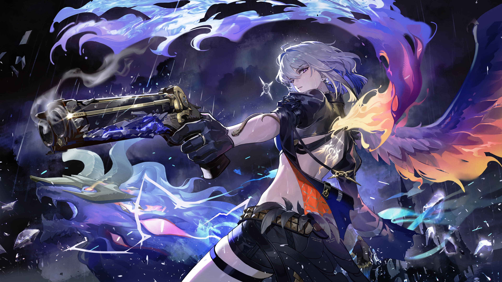
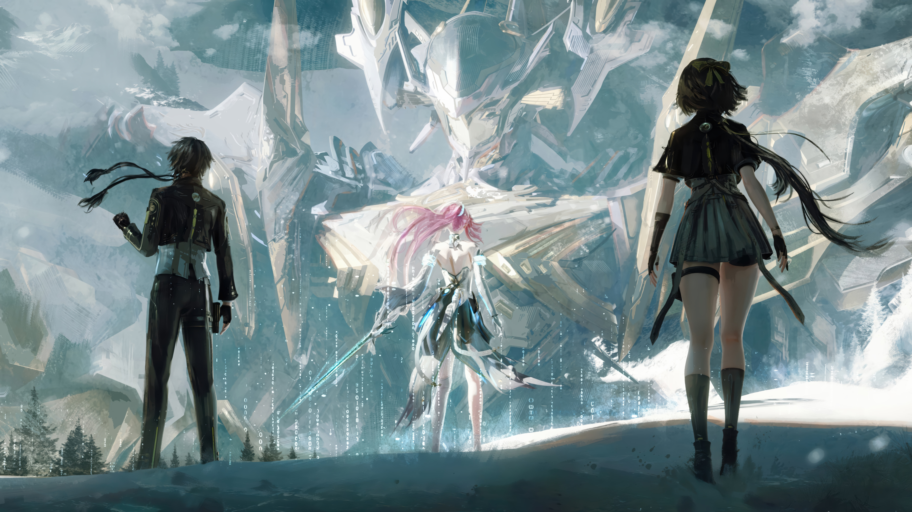
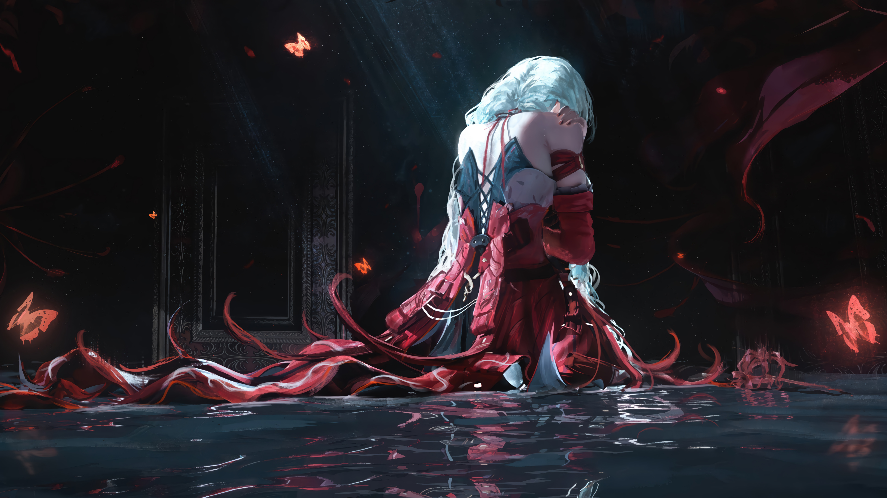
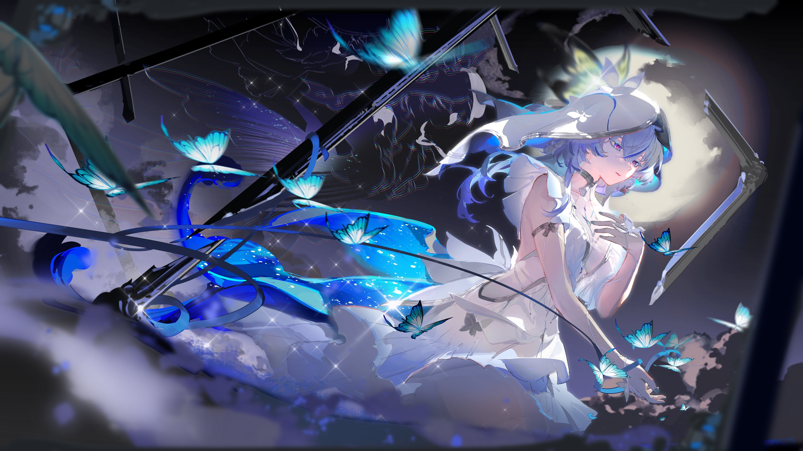
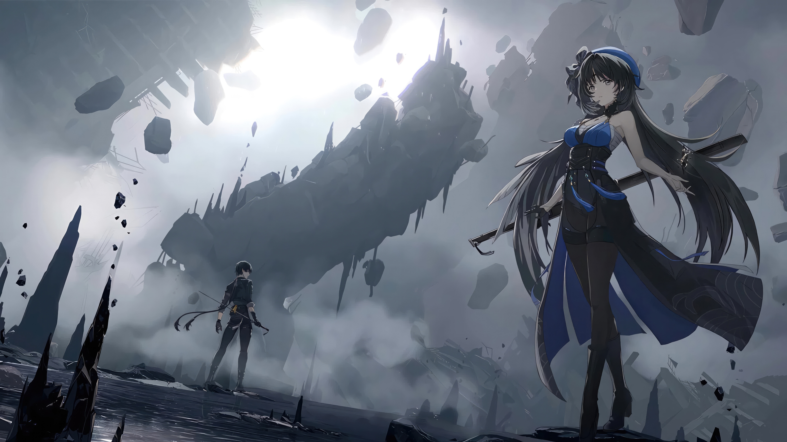
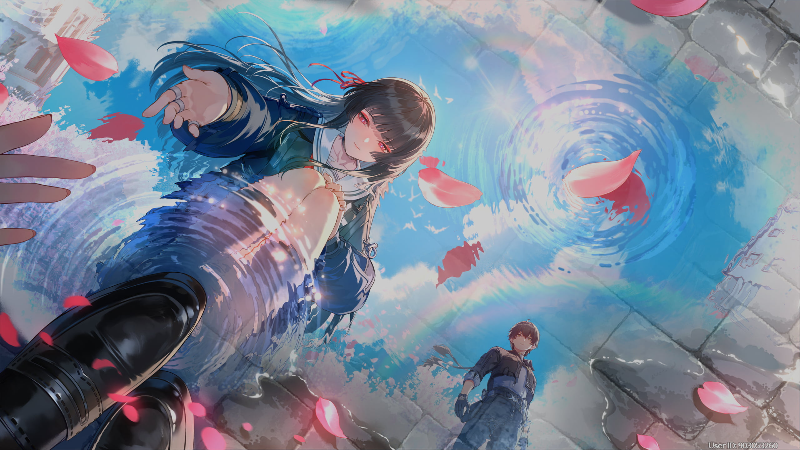

.jpg)





.jpg)

О нас
Добро пожаловать на наш сайт, посвящённый захватывающей игре «Wuthering Waves»! Здесь вы найдёте актуальные гайды по некоторым персонажам этой замечательной игры. Мы собрали полезную информацию, которая поможет вам лучше понять механики игры, эффективно использовать способности персонажей и добиваться лучших результатов в «Wuthering Waves». На страницах нашего сайта вы сможете ознакомиться с подробным описанием особенностей каждого персонажа, узнать об их сильных и слабых сторонах, а также о том, как максимально эффективно применять их в различных игровых ситуациях.
Что такое «Wuthering Waves»?
Wuthering Waves (релиз состоялся 22 мая 2024 года) — кроссплатформенная онлайн-игра в жанрах Action/RPG, разработанная и изданная китайской компанией Kuro Game. Главный герой — Ровер, потерявший память. После пробуждения он оказывается в постапокалиптическом мире, который захватили мутировавшие монстры. Ему предстоит разобраться в происходящем и попытаться спасти человечество от вымирания.
Сюжет Wuthering Waves переносит игроков в футуристический постапокалиптический мир, где загадочная катастрофа, известная как «Плач», уничтожила большую часть человечества. На планете регулярно появляются разломы, из которых выходят хищные и кровожадные монстры. Лишь немногие люди смогли адаптироваться к новой угрозе и дать ей отпор. Задача выживших — уничтожить противника и восстановить цивилизацию.
Главный герой (Ровер) страдает от амнезии. Он пришёл в себя после долгого сна в уже охваченном хаосом мире. Его миссия — вместе с резонаторами (игровыми персонажами, которые подверглись мутации и обрели особые способности) сражаться с монстрами, исследовать мир, открывать новые технологии и выяснять причины катастрофы.